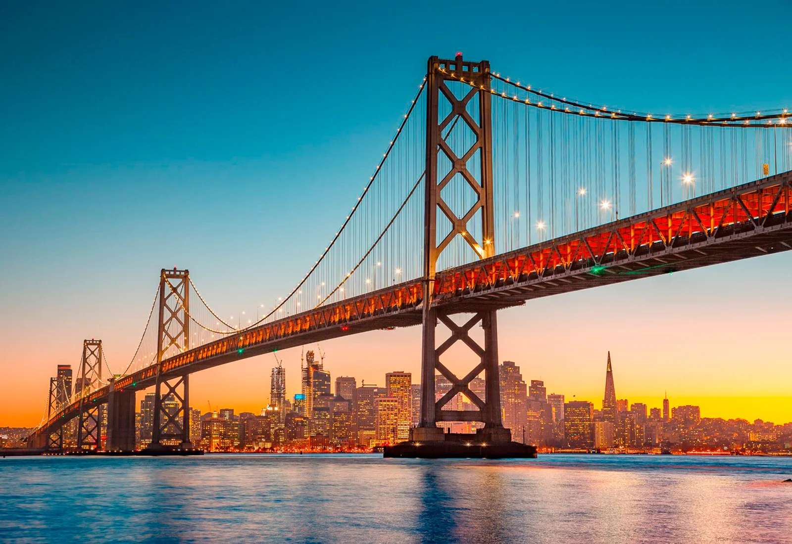

Discover New Places
Travel Destinations
There are many beautiful destinations around the world for travelers to explore. Every place offers something different, from famous landmarks and exciting cities to peaceful natural scenery. Exploring these places can provide travelers with unforgettable experiences.
Some people enjoy visiting large cities filled with restaurants, museums, and entertainment, while others prefer beaches, mountains, or quiet countryside locations. The best destination depends on what a traveler enjoys doing. Trying different types of destinations can make each trip a unique experience.
Choosing the right destination also depends on factors such as budget, weather, transportation, and available time. Researching a place before traveling can help people plan their activities and expenses. Good planning can make a vacation more comfortable and enjoyable.
Popular Travel Destinations
- San Francisco
- New York City
- Paris
- Tokyo
Destination Information
| Destination | Country | Known For |
|---|---|---|
| San Francisco | United States | Golden Gate Bridge |
| Paris | France | Eiffel Tower |
| Tokyo | Japan | Culture and Technology |